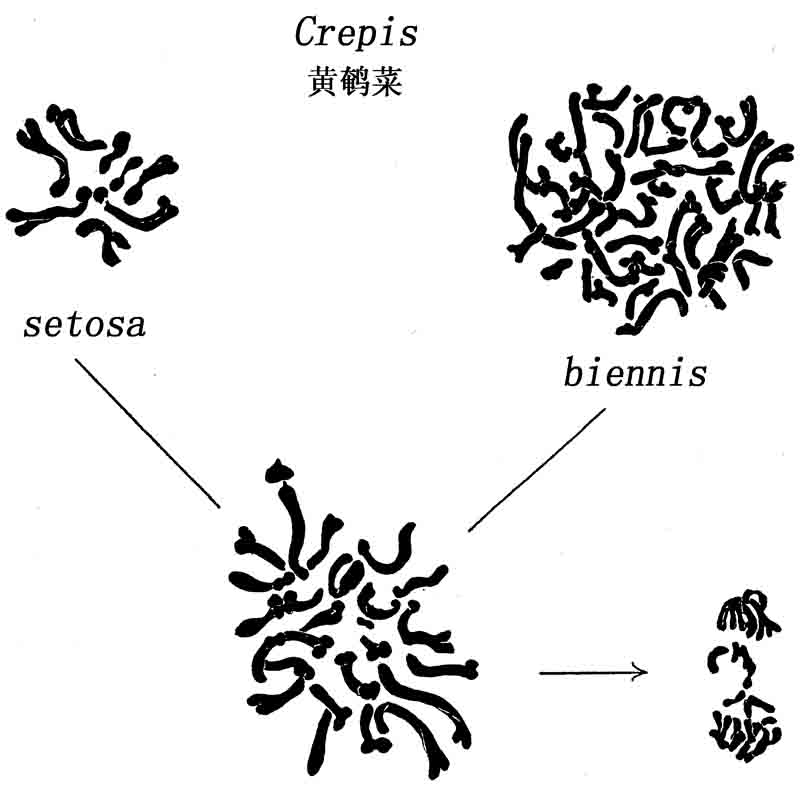
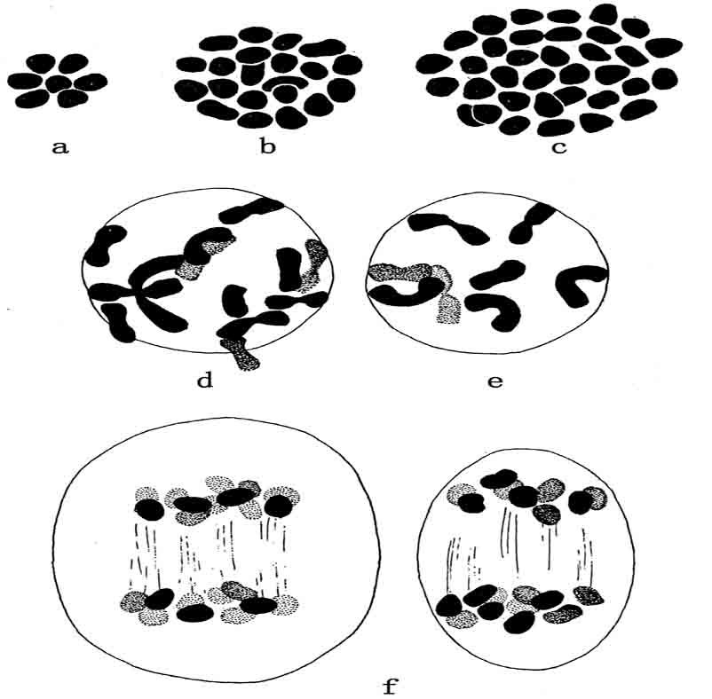

第13章 种间杂交与染色体数目上的变化
由于杂种生殖细胞内染色体不能结合，所以就保留了双倍数目的染色体。这个双倍数目可以通过回交继续维持下去，但是由于杂种缺乏生殖力，所以在自然条件下，就很难从这种组合产生任何永久的类型。
配制饲养果蝇的培养基所需的部分原料（李凤霞提供）。
从不同染色体数目的物种相互杂交的结果中，揭发了一些有趣的关系。一个物种的染色体或者恰好是另一物种的二倍或三倍，在另一些例子里，数目较多的染色体群也许不是另一群的倍数。
1903—1904年，Rosenberg所进行的两种茅膏菜杂交实验，便是一个经典例子。

图108 圆叶茅膏菜的二倍染色体群和单倍染色体群（仿Rosenberg）
茅膏菜的长叶种（Drosera longifolia）有40条染色体（n＝20）、圆叶种（D.rotundifolia）有20条（n＝10）（图108）。杂种有30条（20+10）。杂种生殖细胞成熟时，共有10条接合染色体，即通常所谓的二价染色体，和10条单染色体（单价染色体）。据Rosenberg的解释，认为这意味着长叶种的10条染色体同圆叶种的10条染色体联合，长叶种的其他10条染色体则没有配偶。在生殖细胞第一次分裂时，接合染色体各分为两条，分别向相反的一极进行；10条单染色体没有分裂，不规则地分布在两个子细胞里面。可惜这样的杂种没有生殖力，不能供进一步遗传学研究之用。
Goodspeed和Clausen广泛地研究了两种烟草（Nicotiana Tabacum和N.sylvestris）之间的杂交。但两者的染色体数目直到最近才确定下来。N.Tabacum有24条（n＝12），N.sylvestris有48条（n＝24）。这种染色体数目上的差异，还没有同遗传学研究结果联系起来；染色体在成熟分裂中的行动，也没有见过报告。
两种烟草杂交后的杂种，完全同Tabacum亲型类似，甚至该亲型的基因对于Tabacum种的正常因子呈纯隐性作用时（即同Tabacum型的一些变种杂交）也是这样。Goodspeed和Clausen以为这是Tabacum的整群基因对于sylvestris基因呈显性作用的结果。他们这样表示说：Tabacum的“反应系”，在杂种的胚胎发育过程中，占优势，或者说：“两系的要素相互间一定是极其矛盾的”。
杂种有高度的不孕性，但也形成了少数有作用的胚珠。像繁育结果所证明的，这些胚珠或者完全（或大多数）属于纯粹sylvestris型，或者完全（或大多数）属于纯粹Tabacum型。看来，杂种的胚珠中只有具备任一型的整组染色体（或几乎是整组染色体）的，才能（或大多数能够）有作用。下述实验是这种见解的根据。
杂种同sylvestris花粉受精，产生了各种各样的类型。其中，很多植株的性状完全为纯粹sylvestris型。这些植株都是可孕的，产生纯sylvestris型的后代，因此必须假定它们是由含sylvestris染色体群的胚珠同sylvestris花粉受精而成。也有和sylvestris相类似的植株，却含有大致由Tabacum染色体群得来的其他要素。它们都没有生殖能力。
杂种回交Tabacum，没有成功，但从田间自由传粉中出现了少数杂种，同Tabacum相似，一定是和Tabacum花粉受精而成。其中有些是可孕的。它们的后代绝不表现sylvestris性状。不论它们有什么Tabacum基因，这些基因都表现（孟德尔式的）分离现象。这里也有不孕性的植株，同Tabacum和sylvestris杂交所生的杂种相似。
这些不平常的结果，还有另一方面的重要性。子代杂种可以用两个方法产生出来，即每一个物种都可作为胚珠的母株。由此得出结论：即使是在sylvestris的胞质里面，Tabacum的一群基因也完全决定了个体的性状。鉴于这项结果是由大相悬殊的两个物种的胞质得来的，所以这就成为基因在决定个体性状上有影响的一个有力证据。
Goodspeed和Clausen所提出的反应系观念虽然新颖，原则上却与基因的一般解释毫无矛盾。它仅仅意味着：当sylvestris的单组基因同Tabacum的单组基因对立时，sylvestris的基因完全潜伏，没有作用。但sylvestris染色体依然保持原状。它们未被扔掉，也没有受到亏损，因为从杂种同sylvestris亲株的回交中，可以重新得到一组有作用的sylvestris染色体。
Babcock和Collins用各种黄鹌菜（Crepis）进行了广泛的杂交。Mann女士（1925）也研究过这些杂种的染色体。
Crepis setosa有8条染色体（n＝14），Crepis capillaris有6条染色体（n＝3）。Collins和Mann用两种杂交，杂种有7条染色体。在成熟时，有些染色体结合成对，另一些染色体不经过分裂便分散在花粉母细胞内，形成胞核，各有2~6条染色体。第二次分裂时，所有的染色体，至少在为数较多的一群里的染色体，都各自分裂，子染色体分别进入相反的两极。胞质往往分裂成四个细胞；但有时也分裂成2粒、3粒、4粒或6粒小孢子。
这些含7条染色体的杂种，不产生有作用的花粉，不过有一些胚珠还是有作用的。杂种胚珠同某一亲株的花粉受精，产生了五个植株，各有7条到8条染色体。检查一株含8条染色体的成熟分裂，发现有4条二价染色体，其分裂情况正常。这一株的性状同C.setosa相似，并且有同样类型的染色体。这样便恢复了一种亲型。
另用Crepis biennis同C.setosa杂交，前者有40条染色体（n＝20），后者有8条（n＝4）。杂种有24条（20+4）（图109）。当杂种生殖细胞成熟分裂时，至少有10条二价染色体和少数单价染色体。

图109 Crepis setosa和C.biennis染色体群（仿Collins和Mann）
由此可知，既然setosa只提供了4条染色体，那么，biennis染色体中一定有一些互相结合。以后细胞分裂，有2条到4条的染色体比其他染色体落后，但最后大都进入一个胞核。
子代杂种是可孕的。孙代（F 2 ）植株有24条或25条染色体。从这里似乎有产生一个稳定的新型的希望；这种新型有新的染色体数目，其中，有一对或多对染色体从染色体数目较小的物种方面得来。杂种中有10条二价染色体，这一事实便意味着Crepis biennis是一个多倍体，可能是一个八倍体。子代杂种的同类染色体联合成对。这个含有半数biennis染色体的杂种（F 1 ）是一年生植物，与二年生的biennis不同。染色体数目上的减半，引起了生活习性上的变化。植株成熟时间，只有二年生型的一半。
Longley描写过两型墨西哥大刍草teosinte：一型名为墨西哥型mexicana，为20条染色体（n＝10）的一年生植物，另一型名为多年型perennis，是多年生植物，有40条染色体（n＝20）。两型都有正常的减数分裂。用二倍体teosinte（n＝10）同玉蜀黍（n＝10）杂交，杂种有20条染色体。在成熟时，杂种生殖细胞各有10条二价染色体。普通会把这种情况解释为10条teosinte染色体同10条玉蜀黍染色体之间的联合。
多年生teosinte（n＝20）同玉蜀黍（n＝10）杂交，其杂种有30条染色体。在杂种的花粉母细胞第一次成熟分裂中，看到了一些三价染色体群，疏松地结合起来，有一些二价染色体，也有一些单染色体：三者之间的比例为4∶6∶6或1∶9∶9或2∶10∶4（参考图110b）。在第一次成熟分裂中，二价染色体各自分裂，两染色体分别进入相反的两极；三价染色体也进行分裂，两条同入一极，另一条则进入另一极；单染色体行动迟缓，零乱地分布（没有分裂）到两极上去（图110c）。结果，分布极不平衡。

图110 减数以后的染色体群：a.多年生teosinte；b.同玉蜀黍杂交后的杂种；c.玉蜀黍的减数分裂（仿Longley）
最近有一个例子，谈到染色体数目很不相同的两个物种互相杂交，产生了有生殖能力的、稳定的新型杂种。Ljungdahl（1924）用有14条染色体（n＝7）的罂粟Papaver nudicaule和有70条染色体（n＝35）的P.striatocarpum进行杂交（图111）。杂种有42条染色体。杂种生殖细胞成熟时，出现了21条二价染色体（图111b~e）。二价染色体分裂，每极各得21条染色体。这里没有一条单染色体，也没有一条逗留在纺锤体上。这些结果只能作下述解释：nudicaule的7条染色体，同striatocarpum的7条染色体结合，其余24条striatocarpum染色体则两两结合，形成14条二价染色体。两者共得21条二价染色体，正是观察所得到的数字。由此自然得出下列假设：有70条染色体的（n＝35）striatocarpum型多份是一种十倍体，也就是说，每一类的染色体都有10条。

图111 两种罂粟之间的杂交：a.Papaver nudicaule有14条染色体（n＝7）；
b.杂种，有42条染色体（n＝21）；c.P.striatocarpum有70条染色体（n＝35）；d~e.杂种的胚胎母细胞；f.杂种第一次成熟分裂的后期（仿Ljungdahl）
子代新型产生含21条染色体的生殖细胞。新型平衡、稳定。它也是可孕的，预期可以产生一个稳定的新型。由此又产生其他稳定的类型，在理论上也是可能的。如果子代新型回交nudicaule，应该产生四倍型（21+7＝28）；回交striatocarpum，应该产生八倍型（21+35＝56）。这里，通过二倍体同十倍体的杂交，可以产生以后世代中的四倍体、六倍体和八倍体，这些类型都是稳定的。
Federley关于Pygaera属各蛾种的实验（参考第9章），说明了一项极不相同的关系。由于杂种生殖细胞内染色体不能结合，所以就保留了双倍数目的染色体。这个双倍数目可以通过回交继续维持下去，但是由于杂种缺乏生殖力，所以在自然条件下，就很难从这种组合产生任何永久的类型。